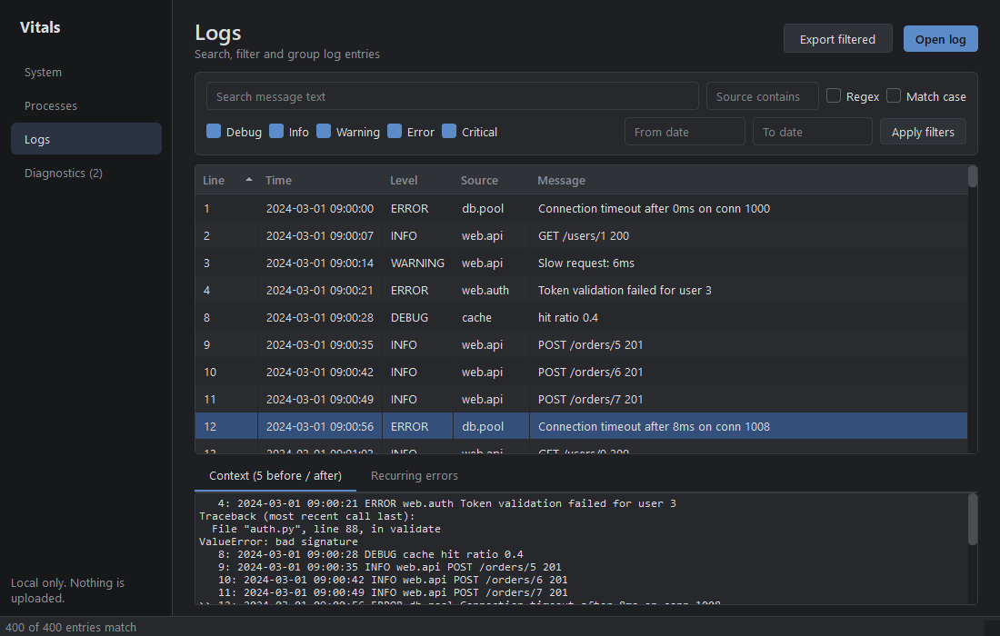

A simple, local-only monitor for system resources and application logs.
Download for Windows Source on GitHub
CPU, memory, disk, network and top processes, with adjustable refresh and bounded history.
Open large text logs, search, filter by level, time and source, group recurring errors, see surrounding context.
Configurable threshold rules for sustained high usage and recurring errors. Alerts are rule matches, not confirmed faults.
Export a text or JSON report of measured values, alerts and a log summary.
Vitals runs entirely on your computer. It does not upload system information or logs, and it makes no network connections of its own.
Download the zip from the latest release, extract the whole folder, and run Vitals.exe. Or run from source:
pip install -r requirements.txt then python -m vitals
The release build is unsigned, so Windows SmartScreen or your antivirus may warn about it. It has only been tested on the developer's own Windows machine. You can always build it yourself from the source.